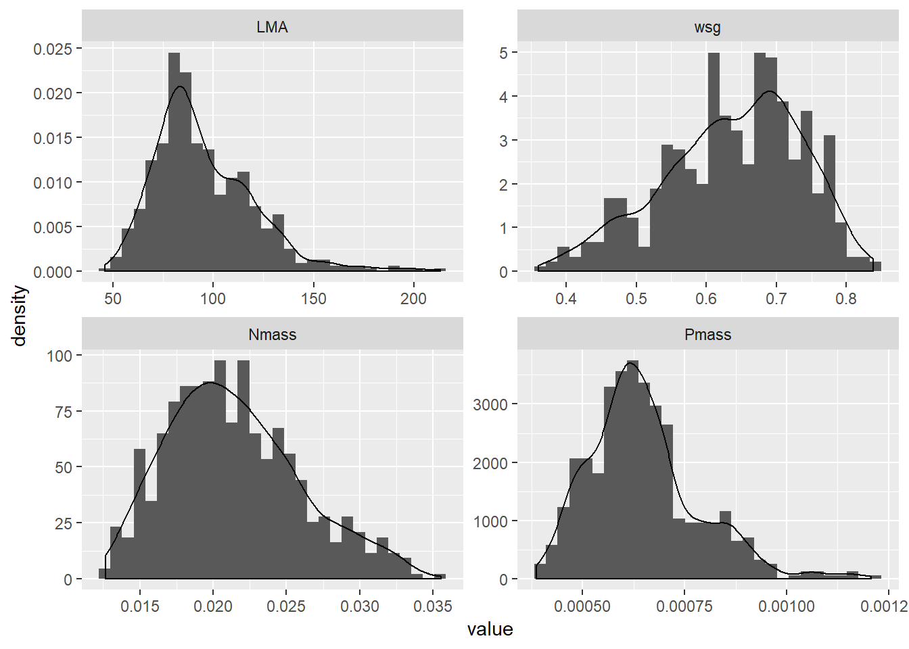
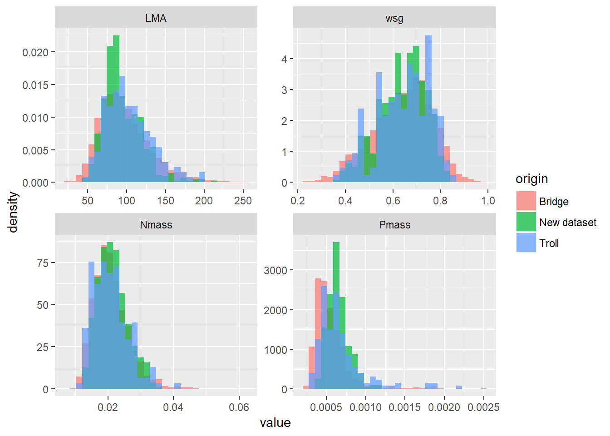

18 Comparisons
traitnew <- baseline %>%
select(species, LMA,wsg,Nmass,Pmass) %>%
filter(Nmass > 0.005) %>%
reshape2::melt(id.var = "species",
variable.name = "trait") %>%
mutate(origin = "New dataset")
ghistbase <- traitnew %>%
# filter(trait == "LMA") %>%
ggplot(aes(value)) +
geom_histogram(aes(y = ..density..)) +
geom_density()+
facet_wrap(~trait, scales = "free")
ghistbase## `stat_bin()` using `bins = 30`. Pick better value with `binwidth`.
traitbridgetot %>% filter(trait != "Height") %>% rbind(traitnew%>% filter(trait != "Height")) %>%
rbind(traitsp %>% filter(trait %in% c("LMA","Nmass","Pmass","wsg"))) %>%
ggplot(aes(value, fill = origin)) +
geom_histogram(aes(y = ..density..), alpha = 0.7,position = "identity") +
# geom_density(aes(y = ..density..), alpha = 0.3)+
facet_wrap(~trait, scales = "free")## `stat_bin()` using `bins = 30`. Pick better value with `binwidth`.## Warning: Removed 6756 rows containing non-finite values (stat_bin). # Discussion and perspectives
The hierarchical models used here, species means are derived from the general trait mean,and thus depend on both the number of observations for each species and the observed trait values. If a species is observed very few (or one) time, its inferred mean is “attracted” by the overall mean value because of the poorly informative value of a few observations. Singleton species with “extreme” trait values will be attributed more reasonable means. On the contrary, abundant species have narrow confidence intervals around their deviation to the overall mean, thus, a reliably distinct trait mean, even if close to the global mean value. This is consistent with the arguable assumption that measuring only one extreme value can be the outcome of picking one special tree by chance, and that this is barely more informative than attributing it the community mean. These models thus offer the advantage to account for the uncertainties due to scarce observations. Even further, considering the number of rare species in tropical plant trait databases such as BRIDGE, and given that each of them contribute to the overall mean, it is wise to include them and “let the data speak”, instead of setting an arbitraty cutoff: why would a species mean computed with 5 observations more reliable than one computed with 4 measurements ? The adjustment of an extreme estimate to a more moderate one is termed shrinkage, and is well known for being inherent to many hierarchical models, and can either be considered a advantageous phenomenon or a real problem (see Rouder et al. (2005), Mould & Upton (2013), Savic & Karlsson (2009)).The main drawback of this approach is that shrinkage effect leads to an overestimation of traits distribution densities around the overall mean, thus giving more weight to the whole dataset (i.e., the some of each individual contribution) than to lower layers. Given the fact that our final output is a table of species means, the uncertainties around these means, thus, a part of the diversity of possible trait value, are ignored. But the validity of this approach is not jeopardized by these considerations. Using hierarchical modeling and the underlying shrinkage as a “precaution principle” to work with scarce species-specific observations, and datasets such as Bridge, is advisable. The main perspective of improvement on this inference is the use of a new feature of TROLL, recently implemented by Fabian Fischer: intraspecific, lognormal trait variability, and trait covariance. This approaches allows both to recreate continuums such as those observed in real forests, by conserving at least the overall links between every trait. This other approach has been already tested by (???)(2014) We did not have the time to adapt our study to this feature, for it came out a very few months ago.
# grid.arrange(ghistsp, ghistb, nrow = 1)
# grid.arrange(ghistb, ghistbase, nrow = 1)
# traitmice %>% rbind(traitbridge) %>% ggplot(aes(value, fill = origin)) +
# geom_histogram(aes(y = ..density.., alpha = 0.2), position = "identity") +
# geom_density(aes(y = ..density..))+
# facet_wrap(~trait, scales = "free")Baraloto, C., Hardy, O.J., Paine, C.E.T., Dexter, K.G., Cruaud, C., Dunning, L.T., Gonzalez, M.-A., Molino, J.-F., Sabatier, D., Savolainen, V. & Chave, J. (2012). Using functional traits and phylogenetic trees to examine the assembly of tropical tree communities. Journal of Ecology, 100, 690–701.
Baraloto, C., Timothy Paine, C.E., Patiño, S., Bonal, D., Hérault, B. & Chave, J. (2010). Functional trait variation and sampling strategies in species-rich plant communities. Functional Ecology, 24, 208–216.
Bezard, V., Descroix, L. & Thiebaut, G. (2017). Diagnostics Post Exploitation (DPE) Bilan des DPE réalisés jusqu’à 2017.
Brienen, R.J., Phillips, O.L., Feldpausch, T.R., Gloor, E., Baker, T.R., Lloyd, J., Lopez-Gonzalez, G., Monteagudo-Mendoza, A., Malhi, Y., Lewis, S.L., Vásquez Martinez, R., Alexiades, M., Álvarez Dávila, E., Alvarez-Loayza, P., Andrade, A., Aragaõ, L.E., Araujo-Murakami, A., Arets, E.J., Arroyo, L., Aymard C., G.A., Bánki, O.S., Baraloto, C., Barroso, J., Bonal, D., Boot, R.G., Camargo, J.L., Castilho, C.V., Chama, V., Chao, K.J., Chave, J., Comiskey, J.A., Cornejo Valverde, F., Da Costa, L., De Oliveira, E.A., Di Fiore, A., Erwin, T.L., Fauset, S., Forsthofer, M., Galbraith, D.R., Grahame, E.S., Groot, N., Hérault, B., Higuchi, N., Honorio Coronado, E.N., Keeling, H., Killeen, T.J., Laurance, W.F., Laurance, S., Licona, J., Magnussen, W.E., Marimon, B.S., Marimon-Junior, B.H., Mendoza, C., Neill, D.A., Nogueira, E.M., Núñez, P., Pallqui Camacho, N.C., Parada, A., Pardo-Molina, G., Peacock, J., Penã-Claros, M., Pickavance, G.C., Pitman, N.C., Poorter, L., Prieto, A., Quesada, C.A., Ramírez, F., Ramírez-Angulo, H., Restrepo, Z., Roopsind, A., Rudas, A., Salomaõ, R.P., Schwarz, M., Silva, N., Silva-Espejo, J.E., Silveira, M., Stropp, J., Talbot, J., Ter Steege, H., Teran-Aguilar, J., Terborgh, J., Thomas-Caesar, R., Toledo, M., Torello-Raventos, M., Umetsu, R.K., Van Der Heijden, G.M., Van Der Hout, P., Guimarães Vieira, I.C., Vieira, S.A., Vilanova, E., Vos, V.A. & Zagt, R.J. (2015). Long-term decline of the Amazon carbon sink. Nature, 519, 344–348.
Cabon, A., Piponiot, C., Dourdain, A. & Hérault, B. (2015). Bilan Carbone de l’Exploitation Forestière sur le Domaine Forestier Permanent de Guyane Française.
Guariguata, M.R., Adame, J.J.R. & Finegan, B. (2000). Seed Removal and Fate in Two Selectively Logged Lowland Forests with Constrasting Protection Levels\(\backslash\)rRemoción y Destino de Semillas en Dos Bosques de Tierras Bajas Selectivamente Talados con Niveles Contrastantes de Protección. Conservation Biology, 14, 1046–1054.
Guitet, S., Brunaux, O. & Traissac, S. (2011). Sylviculture pour la production de bois d’oeuvre dans les forêts du nord de la Guyane : Etats des connaissances et recommandations.
Highley, TL, Scheffer & TC. (1970). Natural Decay Resistance of 30 Peruvian Woods.
Huth, A., Drechsler, M. & Köhler, P. (2004). Multicriteria evaluation of simulated logging scenarios in a tropical rain forest. Journal of Environmental Management, 71, 321–333.
Lyons, K.G. & Schwartz, M.W. (2001). Rare species loss alters ecosystem function - Invasion resistance. Ecology Letters, 4, 358–365.
Marechaux, I. (2017). Biodiversity and Responses To Drought.
Mould, D.R. & Upton, R.N. (2013). Basic Concepts in Population Modeling, Simulation, and Model-Based Drug Development—Part 2: Introduction to Pharmacokinetic Modeling Methods. CPT: Pharmacometrics & Systems Pharmacology, 2, e38.
Nicolini, E. & Morel, H. (2016). Etude du développement et des propriétés du bois de plantation d’espèces forestières guyanaises.
Ripley, B. (1977). Modelling spatial patterns. Journal of the Royal Statistical Society B, 39, 172–192.
Rouder, J.N., Lu, J., Speckman, P., Sun, D. & Jiang, Y. (2005). A hierarchical model for estimating response time distributions. Psychonomic Bulletin & Review, 12, 195–223.
Savic, R.M. & Karlsson, M.O. (2009). Importance of shrinkage in empirical bayes estimates for diagnostics: problems and solutions. The AAPS journal, 11, 558–69.
Schmitt, S. (2017). Rôle de la biodiversité dans la résilience des écosystèmes forestiers tropicaux après perturbation.
Taugourdeau, S., Villerd, J., Plantureux, S., Huguenin-Elie, O. & Amiaud, B. (2014). Filling the gap in functional trait databases: Use of ecological hypotheses to replace missing data. Ecology and Evolution, 4, 944–958.
Violle, C., Navas, M.-L., Vile, D., Kazakou, E., Fortunel, C., Hummel, I. & Garnier, E. (2007). Let the concept of trait be functional! Oikos, 116, 882–892.
Zimmerman, B.L. & Kormos, C.F. (2012). Prospects for Sustainable Logging in Tropical Forests. BioScience, 62, 479–487.
Conventional and reduced impact logging only had a marginal impact on wood quantity (not shown), probably due to high harvest intensities in our simulations. Thus, we pooled these simulations and decided to emphasize on cutting cycle, target volume, and initial forests.↩
Figure 18.1: Simulated evolution of the timber stocks over 5 complete cutting cycles, for two contrasted initial forests -in terms of initial timber stock, cf. the facets labels-, with cutting cycles of 35 and 65 years, and target volumes of 20 (red) and 30 (blue) cubic meters. Lines represent the mean trajectory of 30 simulatons each, and color bands, confidence intervals delimited by the 1st and 99th percentile computed for the 30 observations at each timestep.
Conventional and reduced impact logging only had a marginal impact on wood quantity (not shown), probably due to high harvest intensities in our simulations. Thus, we pooled these simulations and decided to emphasize on cutting cycle, target volume, and initial forests.↩
In reality, loggers often harvest less than the target volume if the stand is not commercially interesting enough, but this is not what we wanted to simulate here.↩
Figure 18.1: Simulated evolution of the timber stocks over 5 complete cutting cycles, for two contrasted initial forests -in terms of initial timber stock, cf. the facets labels-, with cutting cycles of 35 and 65 years, and target volumes of 20 (red) and 30 (blue) cubic meters. Lines represent the mean trajectory of 30 simulatons each, and color bands, confidence intervals delimited by the 1st and 99th percentile computed for the 30 observations at each timestep.
Conventional and reduced impact logging only had a marginal impact on wood quantity (not shown), probably due to high harvest intensities in our simulations. Thus, we pooled these simulations and decided to emphasize on cutting cycle, target volume, and initial forests.↩
References
Rouder, J.N., Lu, J., Speckman, P., Sun, D. & Jiang, Y. (2005). A hierarchical model for estimating response time distributions. Psychonomic Bulletin & Review, 12, 195–223.
Mould, D.R. & Upton, R.N. (2013). Basic Concepts in Population Modeling, Simulation, and Model-Based Drug Development—Part 2: Introduction to Pharmacokinetic Modeling Methods. CPT: Pharmacometrics & Systems Pharmacology, 2, e38.
Savic, R.M. & Karlsson, M.O. (2009). Importance of shrinkage in empirical bayes estimates for diagnostics: problems and solutions. The AAPS journal, 11, 558–69.